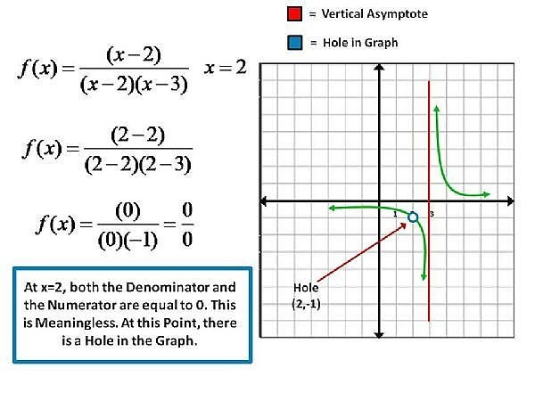

Precalculus is not as scary as it may seem. Do not worry. We got you :D
Chapter 1
Coordinate Plane Quadrants
Distance Formula
Finds the distance between two points on a coordinate plane
The distance formula is also the pythagorean therom.
The distance between two points is the hypotenuse of a right triangle.
Midpoint Formula
Finds the middle point in between two points on a coordinate plane
Dividing by two finds the center x and y point
Intercepts
x-intercepts: let y = 0 and solve for x
y-intercepts: let x = 0 and solve for y
PLEASE write intercepts in coordinate form! Ex. (0, 5)
Symmetry
x-axis Symmetry
One half of the graph is the same as the other half
Opens horizontally
Even exponent on the y value
Ex. x = y4 - 3
y-axis Symmetry
One half of the graph is the same as the other half
Opens vertically
Even exponent on the x value
Ex. y = x2 + 4
Origin Symmetry
Replacing y with -y and x with -x creates the same equation
Most likely has an odd exponent
Ex. y = x5
Equation of a Circle
Center = (h,k)
Radius = r
Find the midpoint of the circle using two points to find the center
Distance from a point and the center is the radius
Slope
AKA average rate of change
rise/run
m = (y2 - y1)/(x2-x1)
Slope-Intercept Form
y = mx + b
m = slope
b = y-intercept
Point Slope Form
y - y1 = m(x - x1)
The same as Slope-Intercept Form
Use a point and the slope to find the slope-intercept form of the slope
Standard Form
ax + by = c
Can convert into slope-intercept form
Parallel & Perpendicular Lines
Parallel lines
Both slopes have the same slope (m)
Ex. y = 2/3x + 1 and y = 2/3x + 4
Perpendicular lines
Both slopes have an opposite value and reciprocal of each other
Ex. y = 2/3x + 1 and y = -3/2x - 7
Interval Notation
(___, ____)
The domain DOES NOT include the x values
If the coordinate is part of a graph, leave a hole in the coordinate
[___, ____]
The domain includes the x values
(___, ___] or [___, ____}
The respective x values will be included/not included
Examples
[-3, 3] is equivalent to -3 <= x <= 3
(-4, 4] is equivalent to -4 < x <= 4 (does not include -4 in the domain)
Even and Odd Functions
Even: f(-x) = f(x) (not a function)
Odd: f(-x) = -f(x) (origin symmetry)
Odd: -f(-x) = f(x) (origin symmetry)
For all Common to the Domains of f and g
(f +- g) = f(x) += g(x)
(fg)(x) = f(x) · g(x)
(f/g)(x) = f(x)/g(x), g(x) is not equal to 0
(f composition of g)(x) = f(g(x))
Inverse Functions
IS NOT 1/f
Swap x and y then solve for y to find the inverse function
If you are trying to find the inverse of a parabola, make sure to find the restriction
Restriction: prevents the graph from going beyond a part of the graph
Reason: If an x value goes beyond the restriction, the y value will be no solution in the original function
Ex. x >= -2 prevents the graph from going lower than (-2, y)
Ex. The inverse of f(x) = (√x + 1) - 2 is f(x) = (x+2) 2 - 1. The restriction is x > -2. If x = -2, the original equation will be √-1 - 2 which is no solution
Chapter 2
Parabola Functions
Quadratic form: ax2 + bx + c
Standard form: f(x) = a(x - h)2 + k
Vertex in standard form: (h, k) (when k = y and h = x)
Vertex in quadratic form: (-b/(2a), f(-b/(2a)))
Polynomials of the Higher Degree (Exponent)
When the leading coefficient's exponent is even, it is a symmetrical function
When the leading coefficient's exponent is odd, it is an odd function
End behavior: graph goes up/down
Exponent - 1 = turning points (amount of times the graph changes from up to down or vice versa)
Multiplicity: how many times each value of x is multiplied in an equation
Division of Polynomials
For dividing equations such as x3 - 1, DO NOT forget to include the missing degrees (2 and 1)
DO NOT forget to use the remainder in the answer. Put the remainder over the divisor in fraction form and add it to the final answer
Synthetic division:
Intermediate Theorem
Goal: find the rational 0s of a polynomial
Possible rational 0: values of x that will make the equation equal to 0
For convenience: pr0 = possible rational 0
If a pr0 provides a -remainder and another pr0 provides a +remainder, the actual rational 0 will be a value in between them
Ex. 1 and 3 are pr0s. 1 = -8 as a remainder and 3 = 48 as a remainder; 2 is the rational 0 in between 1 and 3 that will produce a remainder of 0
Imaginary numbers
i = √-1; i2 = -1
Complex conjugates: a + bi and a - bi
Ex. the complex conjugate of 2 - 3i is 2 + 3i
Multiply by the complex conjugate of an imaginary fraction to simplify it
Descartes Rule of Signs
Trick to find the amount of real 0s in a polynomial function
Number of sign changes in the function - 2 = number of POSITIVE real 0s
Number of real 0s could be the amount of sign changes as well
f(-x) sign changes in the function = number of NEGATIVE real 0s
Asymptotes of Rational Functions

Holes
Place where x has no y value because it is undefined
If the same binomial is in the numerator and denominator, the x value is the x for the hole
Plug in the x value to find the y value of the hole
Verticle asymptote
X value that makes the denominator 0 (binomial that is not the hole)
Horizontal asymptote
HA: horizontal asymptote
If the numerator's degree > denominator's degree, HA: y = 0
If the numerator's degree = denominator's degree, HA: y = num degree / den degree
If the numerator's degree < denominator's degree, there is no HA
Slant Asymptote
Quotient of polynomials without the remainder
Chapter 3
Exponentials
f(x) = a · bx-h + k
Has a horizontal asymptote
Focal point: first integer point closest to HA
a: distance between focal point and horizontal asymptote (+ = focal point is above HA, - = focal point is below HA)
Logarithms
log: log10
ln: loge
logan = x is the same as ax = n
logan = x is the same as ln n / ln a = x
Compound Interest
For n compoundings per year
A = P(1 + r/n)nt
P = principal/initial value for investment
r = annual interest rate
t = years
n = number of compoundings per year
Continuous Compounding
A = Pert
Exponential growth/decay
y = aebx
Chapter 4
Radians and Degrees
Degrees
θ = theta
Positive angles: counterclockwise
Negative angle: clockwise (add 360 to find the positive angle)
Coterminal: two different angles are in the same position on the coordinate plane